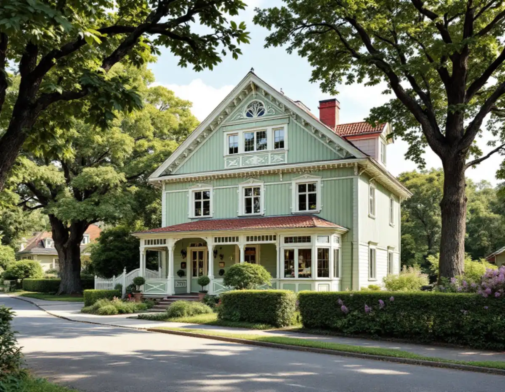

Platsbesök
Vi går igenom tomten, träden, grannhusen och det befintliga huset.
Duvbo är Sundbybergs villastad och ett riksintresse för kulturmiljövården, och där gäller andra regler än på andra villatomter i staden. Ska ett nytt hus byggas, ett gammalt ersättas eller trädgården göras om kring en tillbyggnad börjar arbetet hos stadens arkitekter. Geal Entreprenad AB tar sådana projekt som total entreprenad, och här är vad Sundbybergs stad kräver.

Sundbybergs stad beskriver Duvbo som Sveriges första egnahemsområde. Riksantikvarieämbetet utsåg området till riksintresse 1987, och det är de stora trädgårdarna, gatunätet, parkerna och villorna från den tiden som tillsammans bär värdet. Staden skriver att det inte i första hand är de enskilda husen som är intressanta, utan samhället som helhet.
Planerar du en nybyggnad eller en tillbyggnad ber staden dig boka ett konsultationsmöte med någon av stadens arkitekter. Mötet är kostnadsfritt och ger vägledning om vad som är möjligt på fastigheten, vilka krav som kan ställas på gestaltning och utformning och om det finns särskilda bestämmelser. Till detaljplanen hör två skrifter, Duvbo värt att värna och ett miljöprogram, med riktlinjer för om-, till- och nybyggnad.
Vi tar gärna med en första skiss till det mötet. Hur köket och fönstren i en befintlig Duvbovilla påverkas av reglerna beskrivs på sidan om köksrenovering i Sundbyberg.
När de nya reglerna i plan- och bygglagen började gälla 1 december 2025 utökades lovplikten för kulturhistoriskt värdefulla områden, och det påverkar Duvbo. Att uppföra, flytta eller bygga till en friggebod är inte längre tillåtet där, och den som river sin friggebod kan inte bygga upp den igen. Bygglov krävs nu för alla skärmtak.
Plank, murar, altaner, parkeringsplatser och avfallsbehållare kan också kräva lov om de påverkar områdets eller husets karaktär, och staden gör en bedömning i varje enskilt fall. Eftersom murar ofta är karaktärsskapande krävs enligt staden nästan alltid lov för murar i Duvbo. Detaljplanens utökade lovplikt omfattar dessutom allt som påverkar husets yttre utseende, även solcellspaneler.
För ett nytt en- eller tvåbostadshus krävs bygglov, och Sundbybergs stad räknar upp handlingarna: plan-, fasad- och sektionsritningar, situationsplan på en nybyggnadskarta typ A, markplaneringsritning, material- och kulörbeskrivning, kontrollansvarig eller kontrollplan och en beräkning av dagsljusfaktorn. Måtten på ritningarna ska anges i millimeter.
Markplaneringsritningen ska visa hur huset anpassas till platsen, särskilt om tomten är kuperad, med eventuell uppfyllnad, schaktning, parkering och infart. I Duvbo ska trädgården och materialvalen dessutom anpassas till kulturmiljön. Staden vill att parkeringsplatser ordnas långt in på tomten, att hårdgjorda ytor begränsas och att asfalt och betongplattor undviks, och att pool, trädäck och altan placeras bort från gatan.
Behöver det gamla huset rivas först krävs rivningslov inom detaljplan. Rivning betyder enligt staden att hela eller en del av byggnaden tas bort, även stommen. Om du vill ha en lovfri tillbyggnad i samband med att ett nytt en- eller tvåbostadshus byggs behöver du söka frivilligt bygglov för den. Läs mer om nybyggnad av villa.
I Duvbo krävs marklov för att fälla ett träd med en stamdiameter större än 20 centimeter, mätt 1,3 meter över marken. Staden skriver att den är restriktiv med sådana lov. Till ansökan hör fotografier, en situationsplan där träden är utmärkta och skälet till fällningen, och träden ska märkas med ett färgstarkt band inför ett eventuellt platsbesök. Därför planerar vi husets placering och byggvägen runt träden från början.
Byggbodar och byggplank kräver bygglov, och för container och materialupplag kan det behövas beroende på läge och storlek. Etableringen bör stå på den egna tomten om det går. På stadens gatu- eller parkmark krävs tillstånd från polisen. Beslut om bygglov skickas till berörda grannar, som har tre veckor på sig att överklaga. Följer ansökan inte detaljplanen får grannarna dessutom lämna synpunkter i ett grannehörande innan beslut fattas.
Vi går igenom tomten, träden, grannhusen och det befintliga huset.
Skissen stäms av med stadens arkitekter innan något ritas klart.
Rivning, mark, grund, stomme och installationer var för sig.
Ritningar, nybyggnadskarta, markplanering och dagsljusberäkning.
Bodar och upplag på tomten och en kontakt för hela bygget.
Kontrollerna sammanställs så att huset får tas i bruk.
Rotavdraget är 30 procent av arbetskostnaden, högst 50 000 kronor per person och år och högst 75 000 kronor tillsammans med rutavdrag. Material och resor ger inget avdrag, och du ska äga bostaden när arbetet utförs.
Ett helt nytt hus ger inget rotavdrag, och inte heller rivning av ett hus. Bygger du i stället om eller till det befintliga huset kan arbetet ge avdrag – en tillbyggnad om den sitter ihop med ytterväggen till minst 75 procent eller har en dörr emellan. Vi redovisar skillnaden tydligt i kostnadsförslaget.
Husets storlek, eventuell rivning, markförhållandena och de krav på utformning som kommer fram vid konsultationen väger tyngst. Efter ett gratis platsbesök får du ett skriftligt kostnadsförslag.
Total entreprenad för villan.
Byggfirma →Takbyte, takbesiktning och plåtarbeten.
Takläggare i Sundbyberg →Ventilationen, OVK och Duvbo.
Badrumsrenovering i Sundbyberg →Panel och puts på Duvbos villor.
Fasadrenovering i Sundbyberg →Duvbo, flerbostadshusen och lovet.
Fönsterbyte i Sundbyberg →Ta bort färg och fernissa från gamla golv.
Golvslipning i Sundbyberg →Duvbos villor och stadens lägenhetskök.
Köksrenovering i Sundbyberg →Lamellhus, kulörbyte och bostadsrätt.
Målare i Sundbyberg →Altan, pergola och staket enligt stadens guide.
Snickare i Sundbyberg →Ny tapet i äldre lägenheter.
Tapetsering i Sundbyberg →Duvbo, träden och riktlinjerna.
Tillbyggnad i Sundbyberg →